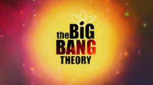

Sobre a serie
The Big Bang Theory é uma série de televisão norte-americana de comédia de situação que estreou na CBS em 24 de setembro de 2007 e terminou em 16 de maio de 2019, tendo total de 279 episódios em doze temporadas. Criada por Chuck Lorre e Bill Prady, a série conta com cinco personagens que vivem em Pasadena. Entre eles, estão o físico teórico Sheldon Cooper e o físico experimental Leonard Hofstadter, ambos vivendo juntos, partilhando um apartamento e trabalhando no Instituto de Tecnologia da Califórnia - Caltech; Penny, uma garçonete e aspirante a atriz que mais tarde se torna uma representante farmacêutica, e que vive como vizinha de ambos; o engenheiro aeroespacial Howard Wolowitz e o astrofísico Rajesh Koothrappali, amigos e colegas de trabalho geeks, semelhantes e socialmente desajeitados de Leonard e Sheldon. Os hábitos geeks e o intelecto dos quatro rapazes entra em contraste em relação ao efeito cômico com habilidades sociais e senso comum de Penny.
Mais Informações
O show é produzido pela Warner Bros. Television em conjunto com a Chuck Lorre Productions. Em agosto de 2009, a sitcom ganhou o prêmio TCA de "melhor série comédia" e Jim Parsons ganhou o prêmio por seu desempenho individual na comédia. Parsons também conquistou quatro Emmy Awards de melhor ator em série de comédia e um Globo de Ouro[5]. Quando a terceira temporada estreou em 21 de setembro de 2009, ela alcançou o patamar de programa de maior audiência da CBS. A série estreou na televisão aberta Brasileira pelo SBT no dia 20 de agosto de 2011,[6][7] deixando de ser exibida neste canal uma semana depois, no dia 27, devido à baixa audiência.[8] Em 12 de novembro de 2012, o SBT estreou a exibição diária de madrugada após Two and a Half Men[9]. Retornou a grade do SBT em 9 de junho de 2018, mas ficou ao ar até o dia 23, sendo cancelada mais uma vez por conta da baixa audiência no final da tarde. Voltou pela terceira vez no SBT em 1.° de agosto de 2020, agora com exibição nas primeiras horas do dia. Ficou no ar até o dia 12 de setembro do mesmo ano, sendo substituído pela extensão do Sábado Animado.[10][11] Voltou a grade em 5 de dezembro de 2020, ficando no ar até 15 de maio de 2021, nas madrugadas de sábado para domingo. Em março de 2014, a emissora americana CBS anunciou a renovação da série por mais três anos, até a décima temporada (2016/2017).[12] A emissora está satisfeita com os altos índices de audiência e pelas críticas positivas que o seriado cômico vem alcançando.[13] Em agosto de 2015, o presidente da CBS, Glenn Geller afirmou que a série poderia ser renovada para uma 11º temporada, ainda sim na época, não houve uma confirmação.[14] Em Fevereiro de 2017, foi anunciado de que a série seria renovada para mais duas temporadas, assim, com um possível encerramento da série na 12º temporada.[15] A 12ª temporada marcou o fim da série multi-câmera mais longa na história da televisão (junto com Two and a half men).[16] A série se encerrou porque o astro Jim Parsons ,intérprete de Sheldon Cooper, estava pronto para se despedir da sitcom de sucesso. A 12ª e última temporada estreou na segunda-feira, 24 de setembro, na CBS, antes de passar para o período regular na quinta-feira, 27 de setembro, e encerrou 16 de maio de 2019[17]. Já no Brasil a série estreou domingo, 07 de outubro ás 20h no canal pago Warner Channel, e se encerrou domingo, 02 de junho de 2019.[18]
